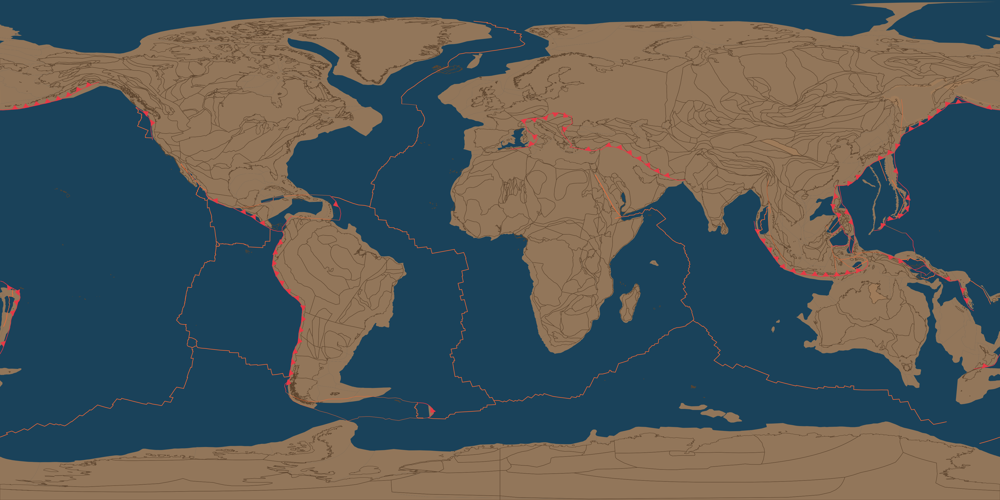
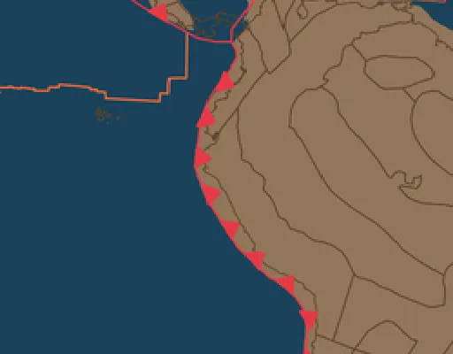
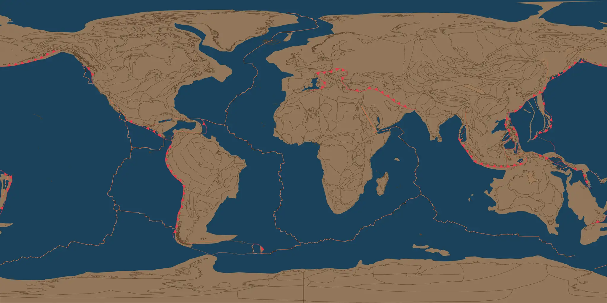

Scrubber resolution/format comparison — present day (0 Ma) frame
Per the 2026-09-12 answers: eyeball before locking the Phase-1 export
budget. Same source frame (globe_frame_1000.png, the
original 4096×2048 render) resized/recompressed four ways. Each card
shows the full equirectangular frame (scaled to fit this page — quality
differences mostly disappear at this size, which is itself informative)
and a 1:1-pixel crop of a coastline-dense region (western South America)
so softening actually shows. File sizes are per single frame — multiply
by however many keyframes Phase 1 ends up using (15 for main-era-first)
to compare total payload.
4096×2048 PNG — original, no recompression
1642 KB / frame · 15 frames ≈ 24.6 MB

1:1 crop
4096×2048 WebP, quality 90 — full resolution, properly compressed
491 KB / frame · 15 frames ≈ 7.4 MB — 3.3× smaller than the PNG at the same resolution
1:1 crop — compare against the PNG above; this isolates format from resolution
2048×1024 WebP, quality 80
131 KB / frame · 15 frames ≈ 2.0 MB
1:1 crop (upsampled from native res, same as it'd render on the sphere)

2048×1024 WebP, quality 60
95 KB / frame · 15 frames ≈ 1.4 MB

1:1 crop
1024×512 WebP, quality 80
46 KB / frame · 15 frames ≈ 0.7 MB
1:1 crop
My working default going in was 2048×1024 WebP q80 (~2 MB total for
Phase 1's 15 main-film eras) — cheap enough that quality was the only
real question, which is why this exists instead of just picking it.
Added 2026-09-22: xian preferred the full-resolution PNG on looks; the
4096×2048 WebP q90 card above isolates "keep the resolution" from "keep
the uncompressed format" — same pixels, a third the weight. The actual
tradeoff for the uncompressed PNG isn't visual (differences mostly
vanish at normal viewing size, which is why the 1:1 crops exist) — it's
page-load weight for visitors and how fast this repo's committed-asset
budget grows as more keyframes get added later (prequel range, denser
sampling). Generated by scripts/export_scrubber_spike_assets.py.